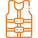

Peralatan Snorkeling
Snorkel
Snorkel adalah pipa yang memungkinkan kamu bernapas saat wajah berada di dalam air. Pipa ini biasanya terbuat dari plastik atau silikon.
A snorkel is a tube that allows you to breathe while your face is in the water. This tube is typically made of plastic or silicone.

Wetsuit
A wetsuit is a garment made from neoprene material that helps maintain body temperature while snorkeling in cold water.
Wet suit adalah pakaian yang terbuat dari bahan neoprene yang membantu menjaga suhu tubuh saat snorkeling di air dingin.

Fins
Fins adalah alat tambahan di kaki yang membantu meningkatkan efisiensi berenang di dalam air.
Fins are additional equipment worn on the feet that help improve swimming efficiency in the water.

Buoys
Pelampung memberikan tambahan keamanan bagi pemula atau mereka yang tidak yakin dengan kemampuan renang.
Buoys provide extra safety for beginners or those who are unsure of their swimming abilities